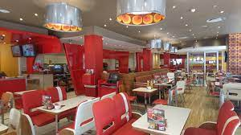
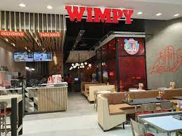

WIMPY
Origins in the United States The Wimpy brand was established in 1934 by Edward Gold, when he opened his first location in Bloomington, Indiana under the name Wimpy Grills. The name was inspired by the character of J. Wellington Wimpy from the Popeye cartoons created by E. C. Segar.
What year did wimpy open in South Africa? 1967 Wimpy International opened its first South African location in Durban in 1967. The South African restaurants were sold to Bakers SA Ltd in the late 1970s, which in 1987 sold the South African chain to Pleasure Foods, then known as Juicy Lucy SA.